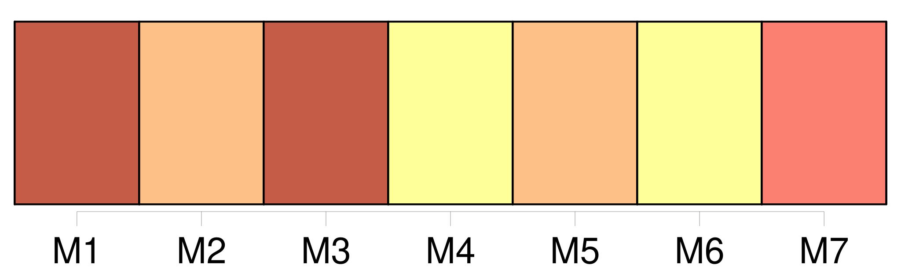

Longueur nb maillons : 7 mentions |
 |
La veille, le médecin avait passé quelque temps avec les jeunes filles et s'était surtout montré aimable pour Gaétane, et il l'avait un peu surprise en lui demandant au cours de la conversation :
» [2 phrases] Ils parlèrent longuement ensemble, et le médecin dit en quittant la jeune fille : « N'oubliez pas que tout dépend de vous, Marcelle ; je vous promets qu'avant trois mois, vous serez la femme du gouverneur, si vous suivez mes conseils ; et moi j'épouserai la fille [du capitaine Laurent] [105 phrases]
» |

|
Il est possible de télécharger la ressource sur la page Ortolang |
Si vous avez des questions ou vous voyez des erreurs, merci d'envoyer un mail à silvia.federzoni89@gmail.com |